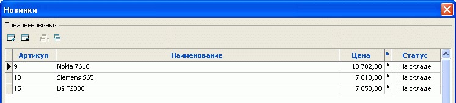
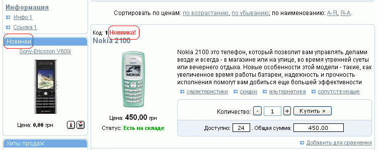

Программа Melbis Shop позволяет некоторым товарам назначать особый статус. В частности, можно выделить новинки. Имеющие этот статус товары могут отображаться на первой странице (в стандартной конфигурации - в третьей колонке) и на странице типа "Отдел с товарами" (в стандартной конфигурации - в первой колонке). Назначение товарам этого статуса производится путем добавления товара в список товаров-новинок, вызываемый из главного меню программы "Товары - Особые - Новинки".

Количество колонок для новинок и число одновременно отображаемых новинок задается на закладке "Настройки раздела" (см.Свойства разделов). При этом на главной странице отображаются новинки в порядке их следования в списке товаров-новинок, в количестве, определяемом параметром "количество одновременно отображаемых новинок", установленным для главной страницы.
Для страницы типа "Отдел с товарами" отображаются только новинки, входящие в этот раздел, и в количестве, определяемом параметром "количество одновременно отображаемых новинок", установленным для этой страницы. В перечне товаров товары, для которых назначен статус "Новинка", выделяются соответствующей надписью (дизайн страницы с иллюстрацией может отличаться от приведенного):
